Home / MLT / Week 4 / Real questions
MLT week 4 - real exam questions
33 questions pulled from past papers whose wording matches this week's topics, newest first, duplicates removed. Pick your answers, then press Check answers. Figures and answer keys are the originals.
Elapsed 00:00
Consider binary classification on input features  . Define the decision boundary of a trained classifier as the set of points at which its predicted label changes. For which of the following method(s) can this decision boundary be non-linear in
. Define the decision boundary of a trained classifier as the set of points at which its predicted label changes. For which of the following method(s) can this decision boundary be non-linear in  ?
?
. Define the decision boundary of a trained classifier as the set of points at which its predicted label changes. For which of the following method(s) can this decision boundary be non-linear in ?- Perceptron.
- Logistic regression, predicting the positive class when
 .
.  -nearest-neighbour with Euclidean distance.
-nearest-neighbour with Euclidean distance.- A decision tree using axis-aligned splits.
- Gaussian Naïve Bayes in which the class-conditional feature variances differ between the two classes.
- A support vector machine with a linear kernel.
- A support vector machine with an RBF (Gaussian) kernel.
Given a dataset with  discrete attributes, each taking exactly 5 possible values (where
discrete attributes, each taking exactly 5 possible values (where
discrete attributes, each taking exactly 5 possible values (where 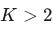
), for a three-class classification task, the number of parameters to be estimated for learning a naïve Bayes classifier is: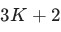
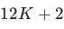
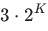
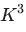
Suppose we model data as (each  . The MLE of must satisfy which of the following equations? Note that is a feature and
. The MLE of must satisfy which of the following equations? Note that is a feature and  is a label.
is a label.
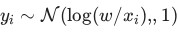
with a single unknown parameter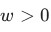
and known variance (each 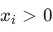
). You perform maximum-likelihood estimation of . The MLE of must satisfy which of the following equations? Note that is a feature and is a label.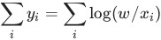
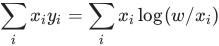
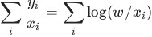
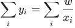
Suppose an email is represented by a binary feature vector  conditioned on the chosen class. The classifier assumes that, given the class label, the features are conditionally independent. Which of the following expressions correctly represents
conditioned on the chosen class. The classifier assumes that, given the class label, the features are conditionally independent. Which of the following expressions correctly represents
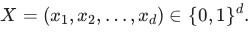
A generative classifier first chooses the class label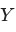
according to the prior distribution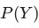
. It then generates the feature vector conditioned on the chosen class. The classifier assumes that, given the class label, the features are conditionally independent. Which of the following expressions correctly represents 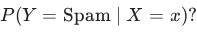
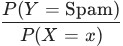
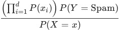
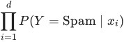
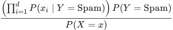
Under the probabilistic view of linear regression, assume  where the observations are independent. Suppose the true noise variance is
where the observations are independent. Suppose the true noise variance is  instead of
instead of  , while the dataset and the observed labels remain unchanged. What happens to the maximum likelihood estimator
, while the dataset and the observed labels remain unchanged. What happens to the maximum likelihood estimator

where the observations are independent. Suppose the true noise variance is instead of , while the dataset and the observed labels remain unchanged. What happens to the maximum likelihood estimator
- It is unchanged.
- It is scaled by
 .
. - It is scaled by
 .
. - It cannot be determined without knowing .
A generative classifier models the joint distribution of the feature vector and the class label . For a particular email represented by the feature vector , suppose
and the class label . For a particular email represented by the feature vector , suppose 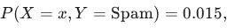
and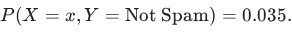
Compute the posterior probability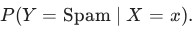
Consider a GMM with components.During the E-step for a single data point , you are given only the following two quantities for the first component:  where
where  is the prior mixing weight and
is the prior mixing weight and  is the posterior responsibility. All other component parameters and densities are unknown. Based strictly on these two values and the mathematical definition of the E-step responsibility,
is the posterior responsibility. All other component parameters and densities are unknown. Based strictly on these two values and the mathematical definition of the E-step responsibility,
 which of the following quantities can be uniquely determined as exact numerical values?
which of the following quantities can be uniquely determined as exact numerical values?
components.During the E-step for a single data point , you are given only the following two quantities for the first component: where is the prior mixing weight and is the posterior responsibility. All other component parameters and densities are unknown. Based strictly on these two values and the mathematical definition of the E-step responsibility,
which of the following quantities can be uniquely determined as exact numerical values?- The marginal probability density of the data point,
 .
. - The ratio of the conditional density to the marginal density for component : .

- The ratio of the joint probability of component to the sum of joint probabilities of all other components: .

- The sum of posterior responsibilities for all components other than component :

Inscript Consider a two-component Gaussian Mixture Model (GMM) with mixing weights and  .For a particular observation
.For a particular observation  , the component conditional densities satisfy
, the component conditional densities satisfy  During the E-step of the EM algorithm, the posterior responsibility of component is computed as
During the E-step of the EM algorithm, the posterior responsibility of component is computed as  .Determine the value of , correct to two decimal places.
.Determine the value of , correct to two decimal places.
and .For a particular observation , the component conditional densities satisfy During the E-step of the EM algorithm, the posterior responsibility of component is computed as .Determine the value of , correct to two decimal places.A coin is flipped 100 times, and it lands on heads 60 times. You use a Beta(10, 40) prior to estimate the true probability of heads. Given these observations, calculate the posterior mean of the probability of heads. Enter the answer correct to three decimal places.
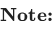
• Pdf of Beta distribution is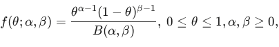
where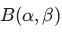
is the Beta function. • The mean of the Beta distribution is: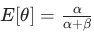
.A researcher is modeling a dataset using linear regression of the form  . They are considering two different probabilistic assumptions for the independent and identically distributed (i.i.d.) noise term
. They are considering two different probabilistic assumptions for the independent and identically distributed (i.i.d.) noise term  : • Assumption A: The noise follows a Gaussian distribution,
: • Assumption A: The noise follows a Gaussian distribution,  . • Assumption B: The noise follows a Laplace distribution,
. • Assumption B: The noise follows a Laplace distribution,  . The training dataset is known to contain several extreme outliers resulting from sensor malfunctions. Which of the following statements correctly describes the behavior of the Maximum Likelihood Estimation (MLE) for the parameter vector
. The training dataset is known to contain several extreme outliers resulting from sensor malfunctions. Which of the following statements correctly describes the behavior of the Maximum Likelihood Estimation (MLE) for the parameter vector  ?
?
. They are considering two different probabilistic assumptions for the independent and identically distributed (i.i.d.) noise term : • Assumption A: The noise follows a Gaussian distribution, . • Assumption B: The noise follows a Laplace distribution, . The training dataset is known to contain several extreme outliers resulting from sensor malfunctions. Which of the following statements correctly describes the behavior of the Maximum Likelihood Estimation (MLE) for the parameter vector ?- Under Assumption A, the MLE is equivalent to minimizing Mean Squared Error (MSE), which is highly sensitive to outliers because the penalty grows quadratically.
- Under Assumption B, the MLE is equivalent to L1 regularization, which is more robust to outliers because the penalty for large residuals grows linearly.
- Both Assumption A and Assumption B lead to the same optimal parameter vector
 regardless of the presence of outliers.
regardless of the presence of outliers. - All the given options are correct
Comprehension passage for this question
You are provided with a training set of 5 observations, each consisting of four binary features 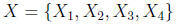
and a binary target label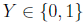
.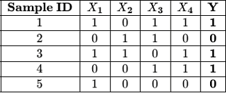
. Based on the above data, answer the given subquestions.Using the Naive Bayes assumption and the data provided, calculate the joint probability
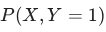
for a new test instance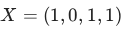
. Enter your answer correct to two decimal places.Comprehension passage for this question
You are provided with a training set of 5 observations, each consisting of four binary features and a binary target label .
. Based on the above data, answer the given subquestions.For the Naive Bayes model described in the main data with  binary features and a binary class label, how many independent parameters are required to fully specify the model? Answer for the original dataset with 5 training examples.
binary features and a binary class label, how many independent parameters are required to fully specify the model? Answer for the original dataset with 5 training examples.
binary features and a binary class label, how many independent parameters are required to fully specify the model? Answer for the original dataset with 5 training examples.- 5
- 8
- 9
- 10
Comprehension passage for this question
Let
 be i.i.d. observations from the mixture distribution
be i.i.d. observations from the mixture distribution
 where
where
 The observed data are
The observed data are
 Assume that the initial estimate of the mixing parameter is
Assume that the initial estimate of the mixing parameter is

Consider the E-step of the EM algorithm. Introduce latent variables
 such that
such that
 if
if
 is generated from
is generated from
 . Compute the posterior responsibility
. Compute the posterior responsibility


such that
if
is generated from
. Compute the posterior responsibility
Comprehension passage for this question
Let
be i.i.d. observations from the mixture distribution
where
The observed data are
Assume that the initial estimate of the mixing parameter is
Using a Maximum A Posteriori (MAP) decision rule, a data point
 is assigned to mixture 2 if the posterior responsibility
is assigned to mixture 2 if the posterior responsibility
 . Based on the values calculated in the E-step, which data point(s) are classified as belonging to Component 2?
. Based on the values calculated in the E-step, which data point(s) are classified as belonging to Component 2?
is assigned to mixture 2 if the posterior responsibility
. Based on the values calculated in the E-step, which data point(s) are classified as belonging to Component 2?


- All four points
Suppose we have a  prior for the parameter
prior for the parameter  . Then, the value of the maximum likelihood estimate (MLE) is equal to the value of the maximum a posteriori (MAP) estimate.
. Then, the value of the maximum likelihood estimate (MLE) is equal to the value of the maximum a posteriori (MAP) estimate.
prior for the parameter . Then, the value of the maximum likelihood estimate (MLE) is equal to the value of the maximum a posteriori (MAP) estimate.- True
- False

- Posterior mean for Beta(1, 1) is 0.039.
- Posterior mean for Beta(1, 1) is 0.03.
- Posterior mean for Beta(0.5, 0.5) is 0.025.
- Posterior mean for Beta(0.5, 0.5) is 0.034.
You are presented with a dataset that has latent variables that influences your data. You are asked to use Expectation-Maximization algorithm to best capture the data. How would you define the steps in the EM (Expectation and Maximization) algorithm?
- E-step: Estimate the latent variables in the dataset, M-step: Maximize thelikelihood over the model parameters.
- E-step: Estimate the number of latent variables in the dataset, M-step:Maximize the likelihood over the model parameters.
- E-step: Estimate the likelihood over the model parameters, M-step: Maximizethe number of latent variables in the dataset.
- E-step: Estimate the likelihood over the model parameters, M-step: Maximizethe number of parameters in the model.
Which of the following statements is/are true?
- EM algorithm converges to a global optimum.
- Lloyd’s algorithm converges to a local optimum.
- Poor initialization does not affect the clusters produced by EM algorithm.
- Poor initialization leads to a slower convergence of Lloyd’s algorithm.
- Lloyd’s algorithm is sensitive to the number of clusters (k).

- To prevent numerical errors when calculating the variance of Gaussianfeatures.
- To ensure that unseen categorical feature values receive small but nonzeroprobabilities.
- To strengthen the model’s predictions by increasing the weight of certainfeatures.
- To balance the likelihood values of all features before computing posteriorprobabilities.
Suppose you toss a coin four times and observe no heads. You then give the coin to your friend, who tosses it until the first head occurs. Your friend tosses the coin a total of five times. Let p
denote the probability that the coin comes up heads. Find the maximum likelihood estimate of p.
Comprehension passage for this question
Suppose that 100 items are sampled from a manufacturing process and 10 are found to be defective. Let p denote the proportion of defective items. Assume that the prior distribution for p is Beta(1, 1). Based on the above data, answer the given subquestions.Select the correct options from the following:
- Posterior distribution for p is Beta(91, 11).
- Posterior distribution for p is Beta(11, 91).
- Posterior distribution for p is Bernoulli(0.1).
- Posterior distribution for p is Bernoulli(0.9).
Comprehension passage for this question
Suppose that 100 items are sampled from a manufacturing process and 10 are found to be defective. Let p denote the proportion of defective items. Assume that the prior distribution for p is Beta(1, 1). Based on the above data, answer the given subquestions.Find the posterior mean. Enter the answer correct to two decimal places.
Consider a logistic regression model trained to detect spam emails. Emails containing harmful phishing links are labeled as spam (1), while regular emails are labeled as not spam (0).
A good spam detector should correctly identify almost all emails with phishing links. Even a single phishing email incorrectly classified as not spam could expose users to significant risks. However, the detector may classify some regular emails as spam. This trade-off is acceptable to ensure safety.
To ensure user safety, if the threshold is set to a low value to prioritize the detection of phishing emails, type 1. If the threshold is set to a high value to minimize false positives (misclassifying regular emails as spam), type 0.
Suppose you want to use a Naive Bayes classifier to predict whether a student will pass or fail an exam based on two features: the number of hours they studied and whether they attended review sessions. Assume that the features are conditionally independent given the exam outcome and that the variances of the study hours distributions are equal for both pass and fail categories.
How many parameters are required to classify a new student using this Naive Bayes classifier?
Consider a dataset with 100 total data points. Each data point is classified as either type A or type B. We model this using a Bernoulli distribution, where p is the probability of a data point being type A. If the maximum likelihood estimate (MLE) of p based on the dataset is 0.4, how many data points of type B are there in this dataset?
Comprehension passage for this question
In the context of Bayesian estimation, consider a Beta prior for the parameter p of a Bernoulli distribution:
 In the context of Bayesian estimation, consider a Beta prior for the parameter p of a Bernoulli distribution: The dataset has 8 ones and 5 zeros. Based on the above data, answer the given subquestions.
In the context of Bayesian estimation, consider a Beta prior for the parameter p of a Bernoulli distribution: The dataset has 8 ones and 5 zeros. Based on the above data, answer the given subquestions.What is the posterior?
- Beta(12, 8)
- Beta(11, 7)
- Br(0.5)
- Beta(8, 5)
Comprehension passage for this question
Based on the above data, answer the given subquestions.
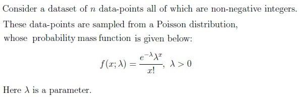
Consider a dataset that has 25 data-points. The data-point xi and its frequency is given in the following table:
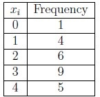
Consider a dataset that has 25 data-points. The data-point xi and its frequency is given in the following table: In case the table is not clear: the value 0 appears once in the dataset, the value 1 appears four times in the dataset, and so on. Find the maximum likelihood estimate for the parameter λ of the Poisson distribution given this dataset.Comprehension passage for this question

What will be the predicted label according to the Naive Bayes decision rule?
Consider a dataset that has 200 data-points, each of which is either a zero or one. The Bernoulli distribution is used to model this data. If the MLE estimate for the parameter p of the Bernoulli distribution is 0.3, how many zeros does the dataset have?
Comprehension passage for this question
Based on the above data, answer the given subquestions.

If p = P ( y = 1 ) is estimated to be 0.4, what will be the prediction for the point x = 3 using the Bayes classifier? Enter 1 or -1.
Comprehension passage for this question
Based on the above data, answer the given subquestions.
If p = P (y = 1) is estimated to be 0.5 using MLE on a given training dataset, what will be the training error of the Bayes classifier for this problem?
A Gaussian Naive Bayes model is trained for a multi-class classification problem that has 12 features and 5 classes. Find the total number of parameters that have to be estimated for this model. Consider each parameter to be a scalar value. In other words, if we decide to store all the parameters in a Python list, with each element of the list being a float value corresponding to a single parameter, what is the size of this list? Ignore the priors in the calculation. Only focus on the parameters of the class conditional densities.
A Gaussian Naive Bayes model is trained for a multi-class classification problem that has 10 features and 3 classes. Find the total number of parameters that have to be estimated for this model. Consider each parameter to be a scalar value. In other words, if we decide to store all the parameters in a Python list, with each element of the list being a float value corresponding to a single parameter, what is the size of this list? Ignore the priors in the calculation. Only focus on the parameters of the class conditional densities.